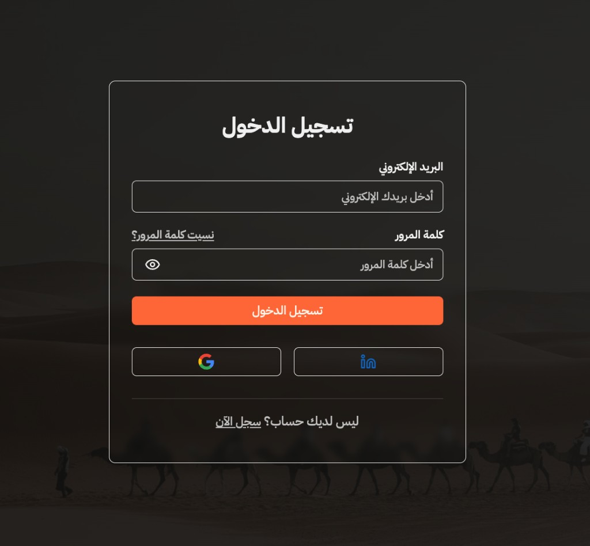
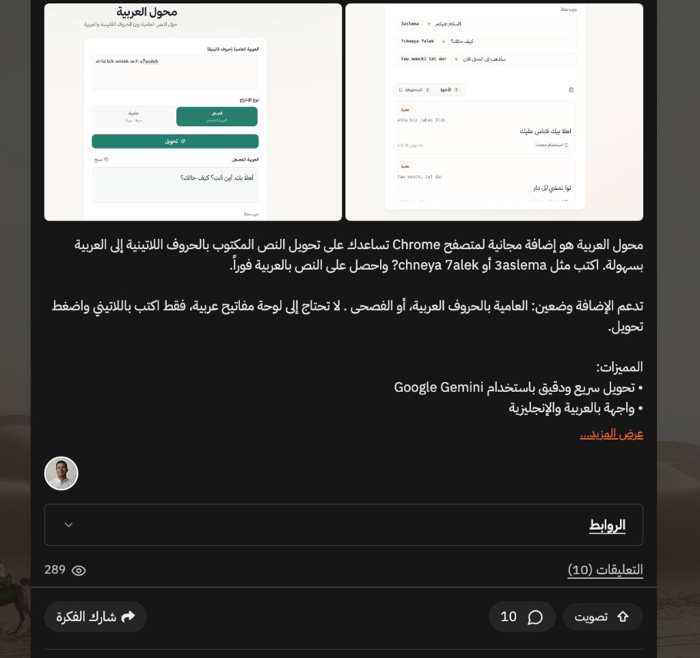

How to vote for Arabizzi
Two quick steps — open our project on Qabilah, sign in if needed, then click the vote button.
خطوتان فقط للتصويت — اتبع الدليل أدناه
Voting closes in · ينتهي التصويت خلال
-
Open the link & sign in
Open the Arabizzi project on Qabilah using the button below. If you don't have an account, create one with Google or LinkedIn.
افتح رابط المشروع. إذا لم يكن لديك حساب، سجّل عبر Google أو LinkedIn.

-
Click «تصويت»
On the project page, tap the Vote button on the bottom right — تصويت in Arabic.
في صفحة المشروع، اضغط زر «تصويت» في الأسفل على اليمين.
